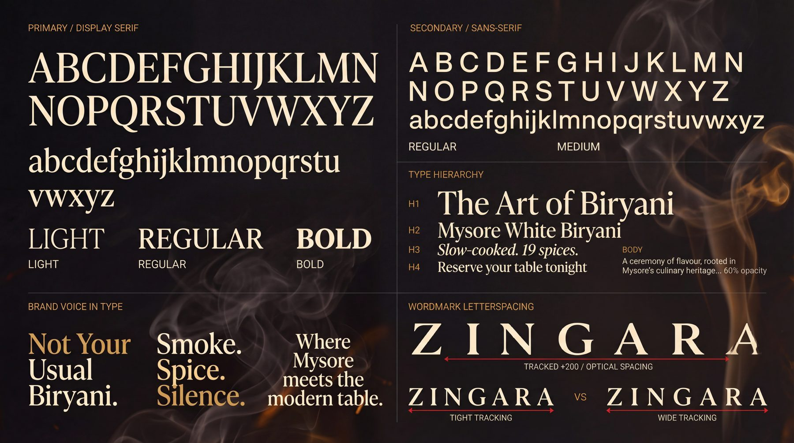
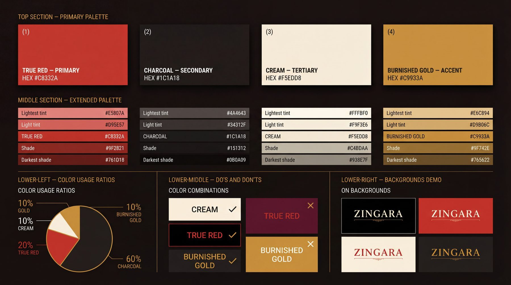
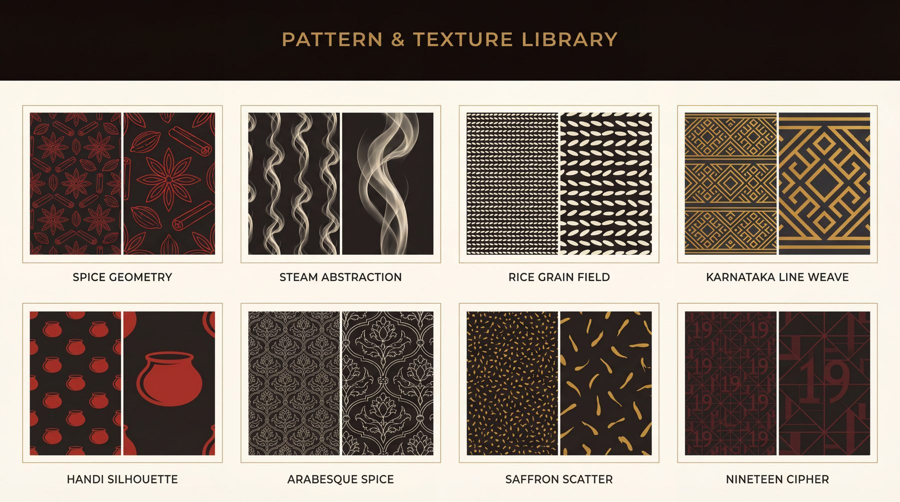

Case 01 · Restaurant · Bangalore
The menu was costing them.
Every dish stayed. We changed how the page reads.
The problem
Our first client, won on a cold call. The food was better than the room suggested, and far better than the menu.
189 items set in four typefaces, prices that wandered down the page, and delivery listings that looked like three different restaurants.
Diners were spending their attention finding dishes instead of wanting them. Nothing was wrong with the kitchen. Everything was wrong with the page in front of it.
The fix
The menu, re-set.
Drag the line. The prices find one column, the four faces become one, and the shouting stops. Nothing is removed — it is the same menu, read differently.
- Charred Corn Lime Butter Charred corn Rs.249/- Lime butter, chilli salt
- Burrata Smoked Tomato Burrata Rs.420/- Smoked tomato, basil oil
- Pepper Prawns Curry Leaf Pepper prawns Rs.460/- Curry leaf, coconut
- Mushroom On Toast Mushroom on toast Rs.310/- Thyme, aged cheese
- Ghee Roast Chicken Ghee roast chicken Rs.540/- Mangalore spice, appam
- Lamb Shoulder Mint Lamb shoulder Rs.720/- Mint, slow fire
- Mysore White Biryani Mysore white biryani Rs.480/- Nineteen spices. No colour.
Read it top to bottom.Nothing shouts.
Reconstruction · the original menu is not ours to publish, and the dishes shown are indicative · what is real is the problem: 189 items, four typefaces, prices that wandered
The work
What was made.
A menu is not a document, it is a system that has to survive a sign, a delivery bag and a phone screen. Five pieces of it.




The numbers
What it did.
A beautiful brand that does not sell is decoration. Two of these are still being confirmed with the client and are marked as such rather than rounded into something that reads well.
Scope
- Brand audit
- Identity & wordmark
- Type and colour system
- Menu system · 189 items
- Eight-pattern texture library
- Packaging & delivery livery
- Signage
- Swiggy & Zomato listings
- Petpooja item names
- Reels & social
- Amma's Breakfast sub-brand
- Guidelines people use